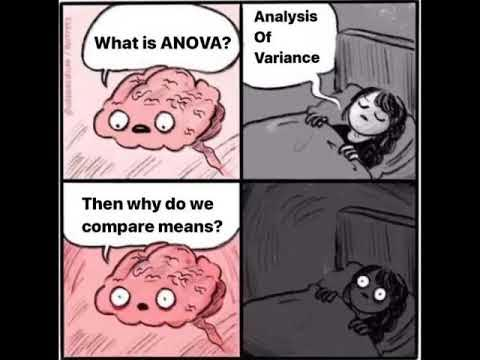
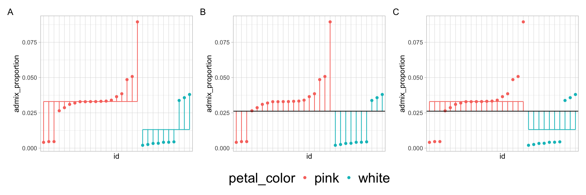

SS <- data |>
mutate(grand_mean = mean(response))|>
group_by(explanatory)|>
mutate(yhat = mean(response))|>
ungroup()|>
summarise(SS_A = sum((yhat - grand_mean)^2),
SS_B = sum((response - yhat)^2),
SS_C = sum((response - grand_mean)^2) )• 16. F (ANOVA) summary
Links to: Summary. Chatbot tutor. Questions. Glossary. R packages. R functions. More resources.
Chapter summary

The analysis of variance (ANOVA) provides a way to understand variation by breaking the variability attributable to our model, and variability unaccounted for by our model. The F statistic compares these two sources of variation. Under the null hypothesis that the groups come from the same (statistical) population, the ratio of between to within group variation has an expected value of one. In the special case of two groups, ANOVA and the two-sample t-test are mathematically equivalent—both quantify how much separation exists between group means relative to expected sampling variation.
Chatbot tutor
Please interact with this custom chatbot (link here). I have made it to help you with this chapter. I suggest interacting with at least ten back-and-forths to ramp up and then stopping when you feel like you got what you needed from it.
Practice Questions
Try these questions! By using the R environment you can work without leaving this “book”. I even pre-loaded all the packages you need!
Part 1: Reflecting on this chapter
In this chapter we used the ANOVA to test the null hypothesis that pink and white parviflora flowers have the same admixture proportion at Sawmill Road.
Q1) Under the null hypothesis that both groups come from the same population, the expected value of \(F\) is .
Q2) If \(F\) is greater than the expected value under the null, (select all correct).
Q3) If \(F\) is less than the expected value under the null, (select all correct).
Q4) Our p-value was very small (much less than the traditional (= 0.05) threshold). This means… (select all correct):.
Part 2: Recognizing types of sums of squares (from code)
Consider the code below for the next three questions:
Q5) Consider the code above. Which calculates \(\text{SS}_\text{error}\)?
Q6) Consider the code above. Which calculates \(\text{SS}_\text{model}\)?
Q7) Consider the code above. Which calculates \(\text{SS}_\text{total}\)?
Part 3: New analysis
Now let’s look at the same question in a different location, Site 22. First, let me process the data for you:
#| context: setup
#| message: false
#| warning: false
library(janitor)
library(forcats)
library(dplyr)
library(readr)
library(ggplot2)
library(broom)
hz_link <- "https://raw.githubusercontent.com/ybrandvain/datasets/refs/heads/master/zones_df_admix_weight_cutoff0.9_gps_dist2het_phenos_excl_GC.csv"
clarkia_s22_hz <- read_csv(hz_link)|>
rename(admix_proportion = `cutoff0.9`) |>
filter(!is.na(admix_proportion), !is.na(petal_color), subsp=="P", site == "S22")|>
clean_names() |>
mutate(tmp = as.numeric(factor(petal_color)) + admix_proportion,
id = factor(id),
id = fct_reorder(id, tmp))|>
select(admix_proportion, petal_color,id)Processing data for S22 hybrid zone
hz_link <- "https://raw.githubusercontent.com/ybrandvain/datasets/refs/heads/master/zones_df_admix_weight_cutoff0.9_gps_dist2het_phenos_excl_GC.csv"
clarkia_s22_hz <- read_csv(hz_link)|>
rename(admix_proportion = `cutoff0.9`) |>
filter(!is.na(admix_proportion), !is.na(petal_color), subsp=="P", site == "S22")|>
clean_names() |>
mutate(tmp = as.numeric(factor(petal_color)) + admix_proportion,
id = as.factor(id),
id = fct_reorder(id, tmp))|>
select(admix_proportion, petal_color,id)#| autorun: true
glimpse(clarkia_s22_hz)
## CODE HERE TO FIND GROUP MEANS
Q8) Use the area above to find the difference in the admixture proportion between pink- and white- flowered parviflora plants at Site 22. Please return a positive number (pink minus white) .
# Group the dataset by petal color, then calculate the mean admixture proportion for each group
mean_admix_by_petal_color <- clarkia_s22_hz |>
group_by(petal_color) |> # group data into pink vs white flowers
summarise(mean_admix = mean(admix_proportion)) # calculate mean admixture proportion per group
mean_admix_by_petal_color # View the resulting summary table# A tibble: 2 × 2
petal_color mean_admix
<chr> <dbl>
1 pink 0.0330
2 white 0.0132# Calculate the difference in mean admixture proportion between the two petal colors
# `diff()` takes the second value minus the first value of `mean_admix`
# (Order depends on how petal_color is sorted in the data!)
mean_admix_by_petal_color |>
summarise(diff_admix = diff(mean_admix))# A tibble: 1 × 1
diff_admix
<dbl>
1 -0.0199This is white minus pink, so be sure to enter the absolute value.

Q9) Consider the plots above. Which has lines showing the “error” deviation?
Q10) Consider the plots above. Which has lines showing the “model” deviation?
Q11) Consider the plots above. Which has lines showing the “total” deviation?
Now let’s run the model!
#| autorun: true
lm(admix_proportion ~ petal_color, data = clarkia_s22_hz)|>
anova()
Q12) Given the p-value, what do you do to the null hypothesis?
Q13) This means, the null
Q15) From this output and your answer to question eight (“What’s the difference in mean admixture proportion by petal color”), Cohen’s D is
Q14) From this output, the \(R^2\) value is: .
Recall:
- \(R^2 = \frac{\text{SS}_\text{model}}{\text{SS}_\text{total}}\)
- \(\text{SS}_\text{total} = \text{SS}_\text{model} +\text{SS}_\text{error}\)
.
\[\text{Cohen's D} = \frac{\text{Difference in group means}}{\text{pooled standard deviation}}\]
With just two samples the mean squared error equals the pooled variance. So the square root of this is the pooled standard deviation.
\[D = \frac{0.0199}{\sqrt{0.00031557}}\]
\[D = \frac{0.0199}{0.01776}\]
\[D = 1.12\]
https://bookdown.org/steve_midway/DAR/understanding-anova-in-r.html
https://www.crumplab.com/rstatsforpsych/semester-project-2021.html
📊 Glossary of Terms
📚 1. Core Concepts
- Analysis of Variance (ANOVA): A statistical framework that partitions total variability in a dataset into variability explained by a model (between groups) and variability left unexplained (within groups).
- Partitioning Variance: Decomposing total variability into distinct components (e.g., model vs. error) to understand sources of variation.
- Null Hypothesis (\(H_0\)): The assumption that all groups are samples from the same statistical population; under H₀, the expected value of the F statistic is 1.
- Alternative Hypothesis (\(H_1\)): The assumption that at least one group comes from a different population, resulting in more between-group variation than expected by chance.
🔢 2. Variance Components
- Between-Group Variability: Variation among group means, attributed to the model (e.g., differences between pink vs. white flowers in admixture proportion).
- Within-Group Variability: Variation among individuals within groups, reflecting background noise and sampling error.
- Total Variability: The sum of between-group and within-group variability.
🧮 3. Sums of Squares, Mean Squares, and their ratio (\(F\))
Sum of Squares (SS): A measure of variability; calculated by summing squared deviations.
- \(\text{SS}_\text{model}\) (aka \(\text{SS}_\text{groups}\)): Variability explained by our explanatory variable(s).
- \(\text{SS}_\text{error}\) (aka \(\text{SS}_\text{residual}\)): Variability within groups, not explained by the model.
- \(\text{SS}_\text{total}\): Total variability in the response variable.
- \(\text{SS}_\text{model}\) (aka \(\text{SS}_\text{groups}\)): Variability explained by our explanatory variable(s).
Degrees of Freedom (df): The number of independent pieces of information used to estimate variability.
- $_ = \(n_\text{groups}-1\).
- $_ = \(n - n_\text{groups}\).
- $_ = \(n_\text{groups}-1\).
Mean Square (MS): An estimate of variance obtained by dividing SS by its degrees of freedom.
- \(\text{MS}_\text{model}\) =\(\frac{\text{SS}_\text{model}}{\text{df}_\text{model}}\)
- \(\text{MS}_\text{error}\) =\(\frac{\text{SS}_\text{error}}{\text{df}_\text{error}}\)
- \(\text{MS}_\text{model}\) =\(\frac{\text{SS}_\text{model}}{\text{df}_\text{model}}\)
F Statistic: A ratio of variances that compares between-group variability (\(\text{MS}_\text{model}\)) to within-group variability (\(\text{MS}_\text{error}\)). \[F = \frac{\text{MS}_\text{model}}{\text{MS}_\text{error}}\]
R Packages Introduced
🛠️ Key R Function
aov()`: Fits an analysis of variance model directly.summary(): Use
summary()on the resulting object to view the ANOVA table, including sums of squares, mean squares, F statistic, and p-value.
aov(response ~ group, data = dataset)|>
summary()anova(): Produces an ANOVA table from a fitted linear model.
lm(response ~ group, data = dataset) |>
anova()This approach is mathematically identical to aov() for one-way ANOVA, but uses a linear model object as input.
lm(): Fits a linear model.
lm(response ~ group, data = dataset)One-way ANOVA is just a special case of a linear model with a categorical predictor. This makes it easy to extend to more complex designs later.
tidy()andglance()(from thebroompackage):
aov(response ~ group, data = dataset) |>
broom::glance()